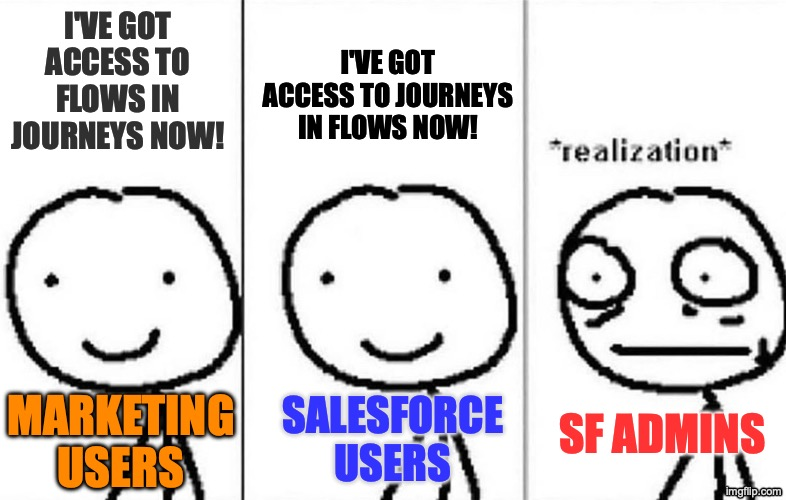
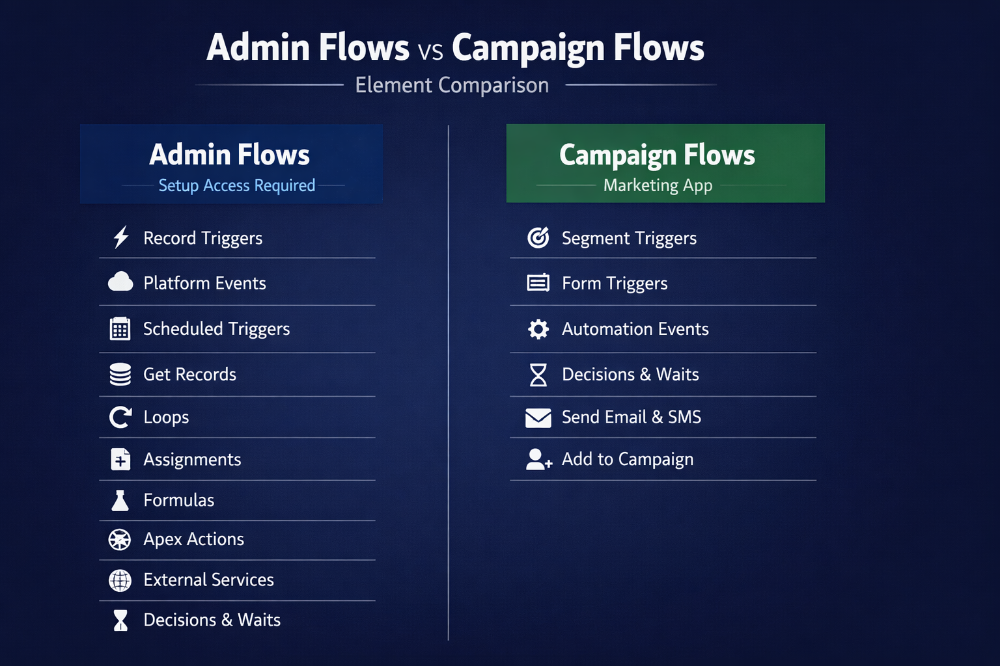
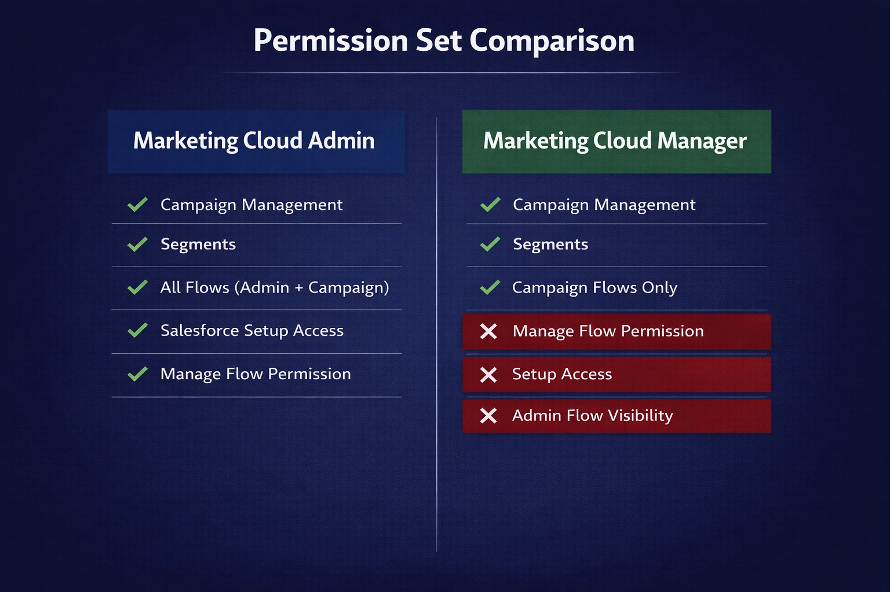

If you're old enough to remember the Reese's Peanut Butter Cups commercials, you know the bit. Two people collide. One's eating peanut butter, the other's eating chocolate. "Hey! You got your peanut butter in my chocolate!" And then they realize - wait, this is actually pretty good.
That's basically what Salesforce just did with Flows and Journeys. Except in this version, the Salesforce user is holding the peanut butter and the marketing user is holding the chocolate. And the admin is not yet convinced this tastes good.

The Setup
In my first post in this series, I mentioned that Agentforce Marketing gives marketing users access to Salesforce Flows. I said admins should pay attention. In the second post, I covered Data 360 and what it costs. Now let's talk about what happens when marketing users get their hands on Flow Builder.
Flows are the backbone of Salesforce automation. Record-triggered flows, screen flows, scheduled flows - they touch everything. If a record updates, a notification fires, a field calculates, or a process kicks off, there's probably a Flow behind it. For most orgs, Flows are admin territory. You build them in Setup. You test them in sandboxes. You deploy them carefully because a bad Flow can break things in ways that are hard to trace.
Marketing journeys have historically lived in a completely different world. Journey Builder runs on the Marketing Cloud Engagement (MCE) infrastructure - the old ExactTarget platform Salesforce acquired in 2013. It has its own data model, its own logic, its own everything. The two systems talked to each other through connectors and APIs, but they didn't share a workspace.
Now they do. Sort of.
With MCE+ and the broader Agentforce Marketing platform, Salesforce is converging Flows and Journeys into a shared orchestration layer. Marketing users can build automations using Flow Builder. Flows can trigger Journey Builder journeys. Journey events can trigger Flows. It's a two-way street.
And if you're a Salesforce admin, your first reaction is probably: "Who authorized this?"
Why Admins Are Nervous
The concern is legitimate. Flow Builder isn't a sandboxed toy. A Flow running in System Context can read and write data that the user who triggered it doesn't even have access to. Flows can create records, delete records, call external services, send emails, update fields across objects - the full toolkit. Giving marketing users access to that power without guardrails would be like handing someone the keys to the server room because they needed to check the thermostat.
Admins have spent years building governance around Flows. Naming conventions, testing protocols, deployment processes, careful permission management. The idea that a marketing team member could spin up a Flow that touches production data? That's not a feature request. That's a nightmare scenario.
So when Salesforce announced this convergence, I wanted to know: did they actually think about governance, or did they just ship it?
Campaign Flows: The Guardrail
They thought about it. The answer is called Campaign Flows.
Campaign Flows are a deliberately restricted subset of Salesforce Flows built specifically for marketing use cases. They look like Flows. They live in Flow Builder. But they are not the same thing as the Flows your admin builds in Setup.
Here's how they're different:
Where you access them. Campaign Flows are accessed from the Marketing app and Campaign records - not from Salesforce Setup. A marketing user with the right permissions will see them in their workspace. They won't see the admin's record-triggered flows, scheduled flows, or any of the other automation that keeps the org running.
What triggers them. Campaign Flows use marketing-specific triggers: segment-triggered, form-triggered, automation event-triggered. They don't use the standard record-triggered or platform event triggers that admin flows rely on. Different entry points, different use cases.
What elements are available. This is the big one. Marketing users building Campaign Flows get a stripped-down element palette. Wait elements and Decision elements are available - those are essential for journey logic. But Assignment, Get Records, Loop, and Formula creation? Not available. The Toolbox panel is hidden entirely. You can build marketing automation logic, but you can't query arbitrary objects or loop through record collections.

The Permission Model
Salesforce enforces the separation through two permission sets designed for this exact scenario.
Marketing Cloud Admin gets the full picture. Campaign management, segments, all flows (including admin-level flows), and access to Salesforce Setup for Marketing Cloud configuration. This is your marketing operations person or your Salesforce admin who also handles the marketing platform.
Marketing Cloud Manager gets campaign management, segments, and Campaign Flows only. No "Manage Flow" system permission. No Setup access. No visibility into admin-level Flows at all.
The distinction matters. A user with only the Marketing Cloud Manager permission set can build, modify, and activate Campaign Flows. They cannot see, touch, or accidentally break any admin Flow. The two worlds stay separate.

Record-Based Sharing (This Part Is Clever)
Here's where Salesforce did something architecturally interesting. Admin Flows are metadata - they're visible to anyone with the "Manage Flow" permission, org-wide. There's no concept of "this flow belongs to the marketing team" vs. "this flow belongs to the sales ops team." If you can manage flows, you can see all of them.
Campaign Flows work differently. They generate data records alongside the flow metadata. That means standard Salesforce sharing infrastructure applies. Campaign Flow sharing defaults to private. An admin can control visibility using sharing rules, public groups, roles, and manual sharing - the same tools you use for any other object.
In practice, this means a marketing team lead can share specific Campaign Flows with their team without exposing another department's flows. Regional marketing teams can have their own Campaign Flows that other regions can't see or modify. That kind of granularity simply doesn't exist for admin Flows.
The Hidden Danger: Permission Creep
Hidden danger: Some out-of-the-box Salesforce permission sets quietly include Flow permissions you might not expect. Sales Engagement, Revenue Cloud Advanced, and others can carry "Run Flows" or even "Manage Flows" permissions baked in. Audit your Permission Set Groups before turning on Campaign Flows.
If you're an admin reading this, go audit your Permission Set Groups. Salesforce recommends using Muting Permission Sets to suppress those hidden defaults. A Muting Permission Set lets you block specific permissions within a Permission Set Group without modifying the original permission sets. It's the Salesforce equivalent of saying "yes, they have this license, but no, they don't get that one specific thing."
Check your execution context: Flows can run in System Context (full system-level access regardless of who triggered it) or User Context (respects the running user's field-level and object-level security). For Campaign Flows built by marketing users, User Context is almost certainly what you want. Don't assume the default is safe - verify it.
![Admin Permission Audit Checklist infographic with three steps. Step 1: Audit Permission Set Groups, with warning that some include hidden Run Flows or Manage Flows permissions - use Muting Permission Sets to suppress them. Step 2: Check Flow Execution Context, with warning that Campaign Flows should run in User Context not System Context. Step 3: Configure Campaign Flow Sharing - set org-wide default to Private, create sharing rules per team or role, test that marketing users cannot see admin flows. Ends with Governance Ready.](../assets/images/blog/d3.png)
What This Means for Your Org
If you're an admin: this requires preparation, not panic. Audit your existing permission sets for hidden Flow permissions. Understand the Campaign Flow sharing model before it gets turned on. And have a conversation with your marketing team about what they're planning to build - not to gatekeep, but to make sure everyone understands the boundaries.
If you're a marketing user: you're getting real power here. Campaign Flows let you build automation that responds to CRM events in real time without filing a ticket and waiting. But respect the boundaries. The restricted element palette isn't Salesforce being stingy - it's protecting you from building something that breaks in ways you can't debug.
If you're at an association where one person wears both hats: welcome to the club. Campaign Flows give you a clean way to separate your marketing automation from your system automation, even if you're the one building both. Future you will thank present you when something goes wrong and you need to figure out which flow did it.
The Peanut Butter Verdict
The Reese's people were right. Peanut butter and chocolate do go well together - but only if someone is managing the ratio.
Salesforce's Campaign Flows architecture is that ratio management. It gives marketing users meaningful automation power while keeping admin flows safely walled off. The permission model is thoughtful. The sharing model is genuinely clever. And the element restrictions show that someone at Salesforce actually talked to admins before shipping this.
It's not perfect. The community has flagged that Campaign Flows are still missing Journey Builder features like goals, exit criteria, and path optimization. But as a permissions and governance story? They got this one mostly right.
This is post 3 of 3 in a series on Salesforce Agentforce Marketing. Post 1 covered the landscape. Post 2 covered Data 360 and pricing.
References
- Marketing Cloud Growth Campaign Flows vs. Salesforce Flows - Salesforce Ben
- An Admin's Guide to Avoiding Risky Defaults in Salesforce Permission Sets - Salesforce Ben
- Configure your Org - Marketing Cloud Next - Salesforce Developer Docs
- Salesforce Campaign Flows: A New Era of Automation - Tectonic
- Marketing Cloud Next: The 8 Main Marketing Flow Types - The Agentic Marketer